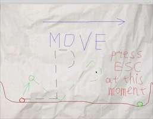
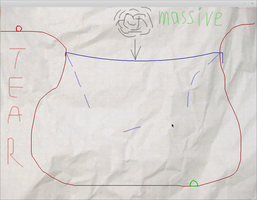
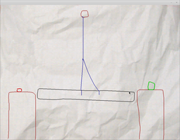

Caph
Dieser Artikel wurde für die folgenden Ubuntu-Versionen getestet:
Dieser Artikel ist mit keiner aktuell unterstützten Ubuntu-Version getestet! Bitte diesen Artikel testen und das getestet-Tag entsprechend anpassen.
Zum Verständnis dieses Artikels sind folgende Seiten hilfreich:
Caph  ist ein Logikspiel mit dem Ziel das rote und das grüne Objekt zu vereinen. Dazu kann man mit der Maus weitere Objekte zeichnen und vorhandene nutzen. Das Spiel nutzt dabei das physikalische Gesetz der Schwerkraft.
ist ein Logikspiel mit dem Ziel das rote und das grüne Objekt zu vereinen. Dazu kann man mit der Maus weitere Objekte zeichnen und vorhandene nutzen. Das Spiel nutzt dabei das physikalische Gesetz der Schwerkraft.
|  |  |
| Tutorial | Spielszene mit Hinweisen |
Installation¶
Caph ist im Playdeb - Repository verfügbar. Nachdem man das Repository zu den Paketquellen hinzugefügt hat, kann man es über das Softwarecenter installieren.
GetDeb und PlayDeb bilden im Prinzip eine gemeinsame Paketquelle, die in die Bereiche
apps (für die Software aus GetDeb)
games (für die Spiele von PlayDeb)
aufgeteilt ist.
Hinweis!
Fremdpakete können das System gefährden.
Im Folgenden wird beschrieben, wie man gleich beide Bereiche der Quelle benutzt. Man kann aber den Bereich apps weglassen, in dem man an den entsprechenden Stellen auf das Stichwort apps verzichtet. Es muss, abhängig von der Ubuntu-Version, eine der folgenden Paketquellen eingetragen werden [2]:
deb http://archive.getdeb.net/ubuntu CODENAME-getdeb apps games
Als CODENAME ist beispielsweise precise für Ubuntu 12.04 einzusetzen.
Um die Fremdquelle zu authentifizieren, kann man
entweder den Signierungsschlüssel herunterladen  und in der Paketverwaltung hinzufügen oder folgenden Befehl ausführen:
und in der Paketverwaltung hinzufügen oder folgenden Befehl ausführen:
wget -q http://archive.getdeb.net/getdeb-archive.key -O- | sudo apt-key add -
Jetzt kann man das Spiel wie gewohnt installieren.
caph
 mit apturl
mit apturl
Paketliste zum Kopieren:
sudo apt-get install caph
sudo aptitude install caph
|  |
| Spielszene |
Bedienung¶
Das Spiel steuert man wie folgt:
| Steuerung | |||
| Allgemein | |||
 | Objekt zeichnen |  | Objekteigenschaft ändern |
| Esc | Letztes Objekt löschen | T | Zeit anhalten/ einschalten |
| R | Level neu laden | N | nächstes Level |
| M | voriges Level | A | starres Objekt zeichnen |
| S | Seil zeichnen | B | verformbares Objekt zeichnen |
Infobox¶
| Caph | |
| Originaltitel: | Caph |
| Genre: | Denkspiele |
| Sprache: | |
| Veröffentlichung: | 2009 |
| Publisher: | http://caphgame.sourceforge.net/ |
| minimale Systemvoraussetzungen: | - |
| Medien: | Download |
| Strichcode / EAN / GTIN: | - |
| Läuft mit: | nativ |
- Erstellt mit Inyoka
-
 2004 – 2017 ubuntuusers.de • Einige Rechte vorbehalten
2004 – 2017 ubuntuusers.de • Einige Rechte vorbehalten
Lizenz • Kontakt • Datenschutz • Impressum • Serverstatus -
Serverhousing gespendet von